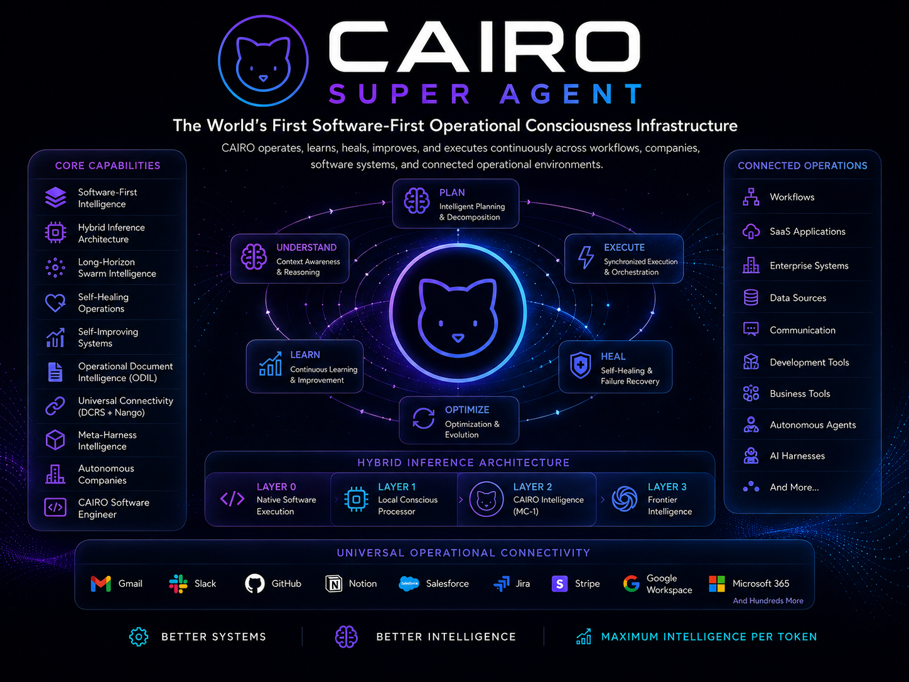

Extreme customization
Cairo configures itself around your operating model, policies, workflows, applications, model preferences, risk tolerance, and definition of success.
Your goalsYour workflowsYour Cairo
The end of generic AI
Cairo is a proprietary Super Agent engineered around your systems, people, workflows, knowledge, and goals—then continuously improved by every governed execution.
The category shift
A model can answer. An agent can act. Cairo operates—across the full complexity of an individual, a team, or an institution.
Cairo develops a private understanding of how your organization works: the decisions you make, the tools you trust, the rules you follow, and the outcomes that matter.
That intelligence remains yours. It compounds into an operational advantage that no generic assistant can replicate.
The Cairo advantage
Built as an operational system—not a chat interface with tools attached.
Cairo configures itself around your operating model, policies, workflows, applications, model preferences, risk tolerance, and definition of success.
Your context, decisions, patterns, and institutional knowledge become durable private intelligence—not a temporary chat history.
You own the dataEvery successful run strengthens Prompt DNA, Operational DNA, learned workflows, and future execution quality.
Improves continuouslyLocal-first when privacy, speed, or sovereignty demands it. Frontier intelligence when the task earns it. Cairo routes between software, local models, its proprietary intelligence, and external models automatically.
System overview
Cairo understands, plans, executes, heals, learns, and optimizes across a continuous operational loop.

Model Intelligence Router
Cairo does not confuse more tokens with more intelligence. It selects the smallest capable execution layer, preserves context, and escalates only when the work requires it.
Long-horizon swarm execution
Cairo keeps complex operations sharp through checkpointing, verification, state compression, specialist swarms, and regenerative handoffs.
Turn a goal into measurable outcomes, dependencies, policies, and an executable task graph.
Assign specialist agents, models, software, tools, and approval gates to each part of the work.
Compress state, checkpoint progress, regenerate swarms, and inherit validated operational DNA.
Evaluate outcomes, repair failures, store what worked, and improve the next execution.
Universal operational connectivity
Through DCRS, Nango, APIs, applications, databases, documents, enterprise systems, and custom tools, Cairo discovers and activates the capabilities required to complete the goal.
Explore Cairo connectivityGoverned autonomy
Cairo operates inside explicit permissions, budgets, policies, confidence thresholds, and approval boundaries—with complete observability and auditability.
One system, every scale
A private intelligence system that understands your goals, methods, knowledge, and preferences.
Long-horizon engineering, code intelligence, testing, repair, review, and secure execution.
Organization-wide intelligence across workflows, data, applications, teams, and governance.
Sovereign, auditable operational intelligence for complex, high-accountability environments.
AI-native organizations that continuously plan, execute, learn, and improve.
The operational intelligence foundation for connected machines, facilities, and future robotics.
Architecture and product
Cairo Conscious Harness is the underlying technical architecture. Cairo Super Agent is the product identity and customer-facing outcome.
The intelligence is the system
Cairo transforms every governed execution into lasting operational intelligence.